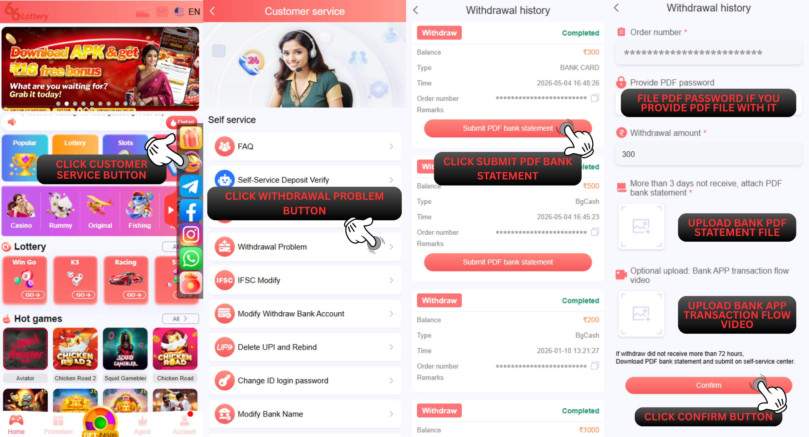

Withdraw Problem
Q : How i can submit issue about Withdraw Problem on self-service center 66 Lottery ?
A :To submit Withdraw Problem on self-service center 66 Lottery, please follow the step below :
1.Login to your 66 Lottery ID Account
2.Click Customer Service button
3.Choose Withdrawal Problem
4.Choose Submit PDF Bank Statement to the withdraw order that you willing to solve
5.Fill the PDF statement password if you put a password on your PDF file
6.Upload your bank PDF statement
7.Click the "Confirm" button

STATUS ISSUE
Q : How do i check my status issue Withdraw Problem on self-service center 66 Lottery ?
A : You can check the status issue by pressing the "Progress Query" for checking all the order record status that you have been submitted to self-service center.
SUCCESS STATUS
Q : I already checking and the status in here already success and there is a notes Success "Withdraw success process to your bank account UTR:" what is that mean ?
A : This mean your withdrawal already completed and there is UTR number give by 66 Lottery withdrawal department just check on the bank account you used for withdrawal.
REJECT STATUS
Q : What about with status reject i need to know if my Withdraw Problem issue get reject by 66 Lottery account department?
A : Okay rest assured we will help to explain to you there is few possibility that make your account got rejection and we will give explanation on this below :
Reject "Bank under maintenance try again later": 66 Lottery withdrawal department reject your withdrawal due bank you use for withdrawal under maintenance and you can try resubmit withdraw later.
Reject "Resubmit correct IFSC code again": This mean IFSC code bank on bank data account for withdrawal is incorrect you need to submit issue IFSC Modification to modify IFSC code correctly.
Reject "Incorrect bank detail, please modify": This mean you need to modify bank data because 66 Lottery withdrawal department check the bank account you bound is incorrect, you just need to submit issue for Delete Bank Account and rebind a new correct bank information.
Reject "System detect illegal bet, contact customer service": This mean your account 66 Lottery has detected by system do illegal betting and you need to contact 66 Lottery customer service to help you with this issue.
Reject "There is technical issue, resubmit again": For this issue you need to resubmit withdrawal again when processing your withdrawal there is problem on 66 Lottery withdrawal department.
Reject "Contact our agent first to help withdraw reject": This mean you need to contact your superior agent to help you with becoming agent.
Reject "Spam claim gift code, withdraw rejected": 66 Lottery withdrawal department reject the withdrawal because the account has detected do claiming gift code more than the limit and you need to contact the customer service 66 Lottery for assistance.
Reject "UCO BANK not available, please change your bank": For UCO / SUCO bank no longer available on 66 Lottery for withdrawal so you need to modify the bank account data by submitting the issue Modify Bank Account Number.
Reject "Withdraw failed, balance return to 66 Lottery account" :This mean your withdrawal failed and already attempt so many times the 66 Lottery bank processing it we can suggest you to try it again later or modify the bank account because there might be issue with the bank account you using.